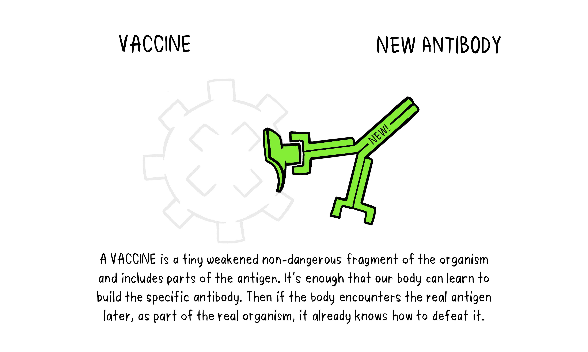

Vaccine
Vaccines contain weakened or inactive parts of a particular organism (antigen) that triggers an immune response within the body.
Newer vaccines contain the blueprint for producing antigens rather than the antigen itself. Regardless of whether the vaccine is made up of the antigen itself or the blueprint so
that the body will produce the antigen, this weakened version will not cause the disease in the person receiving the vaccine, but it will prompt their immune system to respond much as
it would have on its first reaction to the actual pathogen.

Some vaccines require multiple doses, given weeks or months apart. This is sometimes needed to allow for the production of long-lived antibodies
and development of memory cells. In this way, the body is trained to fight the specific disease-causing organism, building up memory of the
pathogen so as to rapidly fight it if and when exposed in the future.